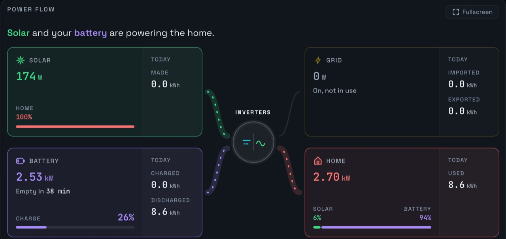

How long will the battery last?
Prince Solar Hub shows how long your SunSynk battery has left before it reaches its reserve, worked out every minute from how fast the battery is emptying. Cook supper and watch it move.

How it works
- It takes the charge left above your reserve and divides it by how fast the battery is giving power now.
- It updates every minute, so switching on the kettle moves it.
- It shows while the battery is powering the home. While it charges or rests, it says so.
Set it up once
- Open Plant settings.
- Type your battery size in kWh. It’s on your installer’s invoice or the battery label.
- Set your reserve: the charge your inverter stops at, such as 20%.
Why it helps in a power cut
Before load-shedding starts, you see if the battery will last until the power is back. If not, switch off the geyser or pool pump first, and watch the time move out.
What else it does
- Power cut emailsAn email when the power goes, and when it’s back.
- Watch your parents’ solarTheir system next to yours, from anywhere.
- SunSynk on a TV or tabletFull screen, for the whole house.
- SunSynk data in ExcelDownload any days, up to a year at a time.
- Why Prince Solar HubEverything it adds to the SunSynk app.
Questions
What do I need to set?
Your battery size and reserve, once, in Plant settings.
Which plans have it?
Home and Family, and every plan for the first 7 days after you add your plant.
See your SunSynk live.
Free for one plant. Nothing to install.
Try it freeSee pricing